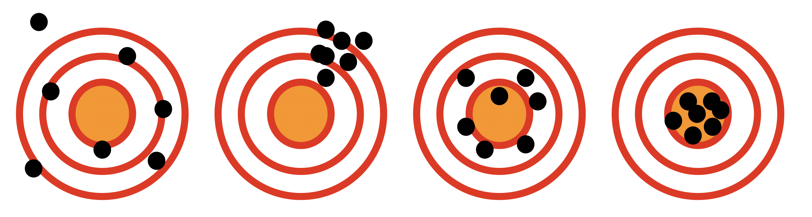

Chapter 26 古典的テスト理論
この講義の目的である心理統計は，「見えないもの」をみよう・測ろう・考えようとする学問です。見えないものを見るためには，測定に対する考え方，方法論の整備が必要です。ここでは測定に対する考え方と基本的なモデルについて解説します。
26.1 テストと心理学
心理学の研究対象である心は，見えないし触れることもできません。なんなら存在するかどうかもわかりません。我々は自分も含めて，他者，人間の中には「心がある」と思っていますが，物質的なものとは違って本当に存在するのかどうかを確認する方法がありませんから237，いわば「心がある」と考えることにしているにすぎません。逆に言えば，それで存在することで合意するなら，ペットにも心があると言っていいでしょう238。ともかくここでのポイントは，心の存在は「みなし」あるいは「仮定」にすぎない，ということです。心とは，機能的な面を表現したなでしょう。
モデルとは，模型とか理想形という意味でもありますが，ここでは抽象的に考えられた機構(しくみ)のことを指します。人の心は，人を理解するために我々が想定したモデルだというわけです。モデルはそれがどのように振る舞うかを記述したものですが，記述の方法が数学的であればと言いますし，確率を取り入れたモデルであれば，統計的な指標同士の関係を記述したものであればなどと言います。記述は自然言語でも構いませんが，第\[chapter1\]講でもお話しした通り，関係を数式で表現するは近代科学の基本的なスタイルです。数学的に表現することで，厳密さや抽象化，一般化が進みます。
さて心理学の研究パラダイム，あるいは心理学の基本的な心のモデルとは何かといえば，第\[chapter1\]章の図\[fig::01_01\]に示した，です。刺激と反応の組み合わせから，ブラックボックスである人の中に「心」というモデルがあることを考えるわけです。この刺激と反応のペアについて，心理学は様々な方法を試してきた学問であるといえるでしょう。一方で，同じような枠組みで見えないものを見ようとする試みがあります。みなさんにも馴染み深い，「テスト」と呼ばれるものです。
みなさんはこれまで，様々なシーンでテストを受けてきたと思います。そのほとんどは，学校関係での学力テストでしょう。 ところで改めて考えると，「学力」とはなんでしょうか。文部科学省は学習指導要領という教育の指針のなかで，様々な力を育てることを謳っていますが，「学ぶ力」とか「生きる力」といったものは明確に定義できているようで，よくわかりません。 ただ少なくとも，学力テストでは学力を測っているということだけは間違いありません。学力は目に見えない，個人のうちに秘めたる力であり，これを測定するためのテストは心理学とも深い関係を持っています。
学力テストは，紙とペンを使って行うのがほとんどです。テスト問題用紙には，様々な設問が用意されており，受験生はそれに回答していきます。回答は正答と誤答に区分され，正答数が多いと学力が高く，正答数が低いと学力が低いと判断されます239 つまり，同じ人に対する様々な設問という刺激を与え，正答という反応がたくさん帰ってくると，その人の中に設問を正しく捉えて判断するための「知識」「学力」「能力」という一貫した性質が保持されていると考えているのです。反応のパターンが同じであるということは，ブラックボックスにその性質が宿っていると考えるのは，心理学のモデルそのものですね。
26.1.1 人の性格についての考え方
たとえば心理学では，人の性格(人格)というものを「個人の持つ安定的な行動傾向」と捉えたりします。この「安定的ななにか」がある，と考えるところが重要で，安定した性質であれば，複数の刺激に対して同じパターンの回答を返すだろう，ということが予想できます。性格検査はそのような目的で作られています。
性格心理学は，古くは外見などの見た目で人を判断するところから始まりました。筋肉質な体つきだから真面目だろうとか，太っているから朗らかだろう，という思いつきのようなところから始まっています。ガルというひとが「骨相学」を考えましたが，これは頭蓋骨の形を見て性格を判断しよう，というものです。これは偏見や差別にもつながる話であり，今では完全に否定された考え方ですが，歴史的にはそうした時代があったのです240。ところで，こうした分類で考える方法を類型論といいます。類型論は話が単純になっていいのですが，このカテゴリーに収まらない例外もすぐに思い付いてしまいます。そこで性格心理学では，類型論から特性論へとシフトしてきました。特性論とは，性格のような人を特徴付ける性質は人類全体で共通していて，その程度が個々人によって違うだけだ，と考えるのです。たとえば明るい人，暗い人というのがいますが，これは「外向性」という性質が高い人なのか低い人なのかという違いであって，暗い人は外向性スコアの低い人，明るい人は外向性スコアの高い人，という相対的な関係で理解するのです(小塩 2020)。
このような特性を測定するのが，性格検査と呼ばれるものです。これはテスト理論の性格版ともいえます。学力テストと違うのは，測りたい目に見えないものが一種類ではないということです。たとえば国語のテストでは国語の能力を測ります。算数のテストでは算数の能力を測ります。つまり測りたいものが1次元なのです。これに対して性格は，様々な行動に反映される個人の特性ですから，それが何次元あるのかが問題になってきます。性格検査はその歴史と統計的な分析の結果から，性格は5次元で測るのがよかろう，とひとまず結論づけられています。ここでは学力テストと性格テストが同じ目的を持ったツールであること，ただし主眼点がことなることを踏まえておいてください。
26.1.2 良いテストと悪いテスト
ところで，学校で行われる試験の中には，学力の程度を明確に測定することを目的にしたものもありますが，授業内容や基礎的な知識を有しているかどうかといった理解度・達成度を目的にしているものもあります。小学校の低学年などはえてして後者の目的で作られており，満点が出ることも少なくありません。ここでは前者の，学力の高さ低さを精緻に測定することを目的にしたテストについて考えていきます241。
さて，目に見えない能力を性格に測定することを目的にしたテストを考えた場合，理想はどういうテストになるでしょうか。考えやすくするために，理想の逆，最悪のテストとは何か，ということを考えてみましょう。みなさんが今まで受けてきた試験で，これは良くないテストだな，と思ったことはありませんか？ それはどのようなものでしたか？ 回答例はいくつか挙げられると思います。1つは「不公平なテスト」でしょう。同じ回答をしていても，ある人は正答と判断され，ある人は誤答と判断される，というのでは困ります。これは問題と採点者の両方が原因です。良いテストはまず問題に対して，正答が厳格に定義されていることが必要です。そして採点者は，回答者が誰であってもその「正答の定義」に則って正しく判断する必要があります。記述・論述試験は，正答の定義や採点者の裁量に影響されることがありますから，本来あまり望ましいテストの形式ではありません。
他にも，「問題が間違っていて答えがない」ものも良いテストとは言えないですね。こうしたテストは全員誤答になるか全員正答になるしかありません。その場合，テストの点数は受験者全員で一律になり，が\(0\)になります。分散が\(0\)というのは，そこから情報を得ることができないので，よくないテストだということになります。
逆に言えば，良いテストとは評価基準が一律で，誰がどこで誰に対して採点しても正答・誤答の判断が一意に定まり，かつ，そのテストから得られる分散がなるべく大きいものであること，と言えます。もしテストが一問しか作れないのであれば，受験生の半数が正答し，残る半数が誤答するのが良いテストです。それが分散を最大にするからです。みなさんはAkinator242というのをご存知でしょうか。古くからある20Quesutions(20の扉)というゲームのオンライン版なのですが，これはいくつかの設問に対する反応から答えを当てるというゲームです。Akinatorは，我々が考えたことに次々と質問してきます。それに答えていくと，20問と行かないうちに当てられることがほとんどです。このAkinatorの出題方法をみていればわかりますが，その問いは「出題者の考えそうな問題空間」を二分の一に分割していくようなものを選んでいます。たとえば第一問は「女性ですか？ 」と聞かれたりします。これにYesと答えるかNoとこたえるかで，少なくとも半分に絞り込めますね243。次に「名前に漢字が入っている？ 」など，さらに回答を絞り込むようにしています。この絞り込み方が1/2のペースでいけば，一番効率よく世界を狭められるのです244。人間がこの手のゲームをやると，下手な質問としていきなり答えを特定するような質問をしたりします。たとえば2,3問目に「あなたの想定した答えは”綾瀬はるか”ですか？ 」と聞いて，YesならいいのですがNoであれば何も分かったことになりません。綾瀬はるかでない何かのほうが，選択肢が多いからです。良いテストとはこのように，世界を半分にわけ，それをさらに半分にわけ・・・と段階的に区分できるような問題が次々あるもの，ということになります。もし1回の試験で様々な区分を作りたいのであれば，事前に分かっている問題の難易度順に1,2,3...と並べ，正答の程度が回答者に応じて分布するようにすれば大きな分散＝情報を得ることができます。
このように，テストは目に見えないものを測定するためのモデルであり，それを数理的に記述して特徴を明らかにしようという営みがあります。これをといいます。次にについて解説していきます。
26.2 測定のモデル
古典的テスト理論は，テスト理論のスタートとなった(今とは古典である)理論です。そのモデルは非常に単純な形で表現できます。古典的テスト理論の測定モデルは次のようになります。
\[X = t + e\]
なんとシンプルなのでしょう。ここで\(X\)とはテストの点数を表します。また\(t\)は，\(e\)はと言われます。\(t\)は本当に測りたいもの，たとえば本当の学力，真の実力といったもの，と思ってください。古典的テスト理論のモデルが言っていることは，テストの点数は本当の能力を反映してはいるが，それに誤差がついたものになっているよ，ということです。この誤差と真のスコアの分離が重要なポイントです。たとえばハードサイエンス(物理学など)では，測定は心を持たないものを対象にし，また測定精度の高いセンサー等で測定しますので，測定した値は大体その通りで間違い無いと考えます。体重計が83kgだったら体重は83kgであって，60kgや90kgということはありえそうにありません。ですが，学力や性格のようなものは，心を持った(と想定される)ものの反応です。人間は嘘をつくし，間違えるし，易きに流れる生き物ですから，外向的なふりをして答えようと振る舞うこともできますし，うっかり計算ミスをしてしまうこともありますし，「あなたはだらしないところがあるのではないか」といわれたら「そうかもなあ」とおもって反応してしまうかもしれません。そういう意味で，表に出てきた回答（反応やテストの得点）はそのまま信用できないのです。本当は\(t\)なんだけど，なんらかの事情である\(e\)が加わったものが，目に見える\(X\)なんだよ，と考えるのが，このモデルの意味するところです。
測定されたものをそのまま信用しない，といえば聞こえが悪いですが，測定の精度はそれほど高くないのだということを自省的に取り込んでいるという意味で，ソフトサイエンスの良心があらわれているとも言えます。みなさんは人を対象に研究をするのですから，この点を強く自覚しておいてください245。
26.3 誤差の基本的性質
ここで誤差のことを考えてみましょう。誤差は本当に測定したいものからずれている分，を表します。 たとえば体重80kgの人がいたとして，その人が体重計に乗ったら81kgだったとします。このずれた1kgがこの測定の誤差になります。 ところで，この体重計に誰も乗っていない時に，その目盛りが0.5kgを表示していたらどうでしょうか。つまり，何もなくてもプラス0.5kgになるようにずれているわけですから，誰が乗ってもプラス0.5kgのずれが常に生じることになります。これは体重計が壊れているので，ゼロにリセットできるように調整が必要です。このような，常に生じる誤差のことをとくにといいます。このような誤差が紛れ込むのはある程度仕方がないものかもしれませんが，常にずれているのであれば，その分を差し引くなどして補正できる誤差です。
ではこの人の，残りの0.5kgのずれはなんでしょうか。たとえば測定の前にたくさん食べたとか，たまたま厚手の下着を身につけていたとかいった，その場限りの一貫性のない誤差というのもあり得ましょう。こう言った誤差のことをと言います。この誤差は，どうしてそのようになったのか，その理由がわかりません。「たまたま」ですから，たまたまプラスになる要因もあれば，たまたまマイナスになる要因もあるでしょう。この偶然誤差こそ，測定の時に入り込む困った問題です。系統誤差は調整して直すことができますが，偶然誤差は傾向がないので対応のしようがないからです。
テストの時に考えなければならない誤差\(e\)は，基本的にこの偶然誤差です。たまたま前日ヤマを張ったところが出たとか，たまたま欠落した単語帳のページに書いてあった項目が問題に入ったとか，体調がたまたま良かった・悪かった，と言った要因など，真の実力が発揮できない要素は必ず入ってくると考えなければなりません。
さてでは，テスト理論のモデルに戻ってこのことを考えてみましょう。もとのモデルを少し拡張して，個人\(i\)についてのテストであるということを明確にするために，\(X_i\)という添字をつけて書くとします。 \[X_i = t_i + e_i\] さて，このテストを\(n\)人のクラスで実施したとします。そこからクラスの平均点が算出できますね。 \[\bar{X} = \frac{1}{n}\sum_{i=1}^n x_i\]
これを展開すると次のようになります。 \[\begin{aligned} & \bar{X} = \frac{1}{n}\sum_{i=1}^n X_i & &\mbox{}\\ & = \frac{1}{n}\sum_{i=1}^n (t_i + e_i) &\mbox{定義より}\\ & = \frac{1}{n} \sum_{i=1}^n t_i + \frac{1}{n}\sum_{i=1}^n e_i &\mbox{分配して}\\ & = \bar{t} + \bar{e} &\mbox{}\\\end{aligned}\]
さて，ここでポイントです。\(\bar{e}\)は偶然誤差の平均を表しています。偶然誤差は一貫性のない誤差なので，プラスに出るかマイナスに出るかわかりませんが，理屈上，その平均は\(0\)であると考えられます。これがなんらかの定数\(c\)であれば，それは系統誤差であり補正すべき大きさですが，そうではなく全く何の傾向もない偶然にすぎないのですから。この特徴，\(\bar{e}=0\)を代入すると上の式は，
\[\bar{X} = \bar{t}\]
となります。やったね！すごい！誤差が消えて無くなりました。
このように，測定の平均値は真の値の情報だけになることがわかります。測定すれば真の値にたどり着く，というのが古典的テスト理論のポイントなのです。
ちょっと補足をしておきます。 最終的に得られた\(\bar{X} = \bar{t}\)というのは，テストの平均が真の値の平均になるということですが，それはクラス全体の平均が本当の能力だというだけで，個人の能力が本当かどうかはわからないじゃないか，と思われるかもしれません。それはそうなのですが，この話を個人と学級という対比ではなく，テストの複数の項目と，合計点としてのその人のスコアだと考えてみてください。すなわち，\(X_{ij}\)として，個人\(i\)の項目\(j\)に対する正答，誤答が採点され，最終的に\(X_i = \sum_{j=1}^M X_{ij}\)と点数が与えられるとします(項目数は\(M\)個)。
ここでも真の能力\(t_i\)と，誤差が考えられますが，誤差は\(e_{ij}\)と項目ごとに逐一入り込むと考えられます。すると上の式展開は次のようになります。 \[\begin{aligned} & \bar{X_i} = \frac{1}{M}\sum_{j=1}^M X_{ij} \\ & = \frac{1}{M}\sum_{j=1}^M (t_i + e_{ij}) \\ & = \frac{1}{M}\sum_{j=1}^M t_i + \frac{1}{M}\sum_{j=1}^M e_{ij} \\ & = t_i + \bar{e_{i}} \\\end{aligned}\] ここで\(\bar{e_i}\)は個人に生じる誤差の平均ですが，これもとくに傾向が考えられないので\(0\)と考えられますから，\(\bar{X}_i = t_i\)と個人の真の能力を測っている，と考えることができます。
26.4 テストの分散と信頼性・妥当性の関係
26.4.1 信頼性
では，今度はテストの分散を考えてみましょう。テストXの分散をVar(X)という添字をつけて書くとします。
\[\begin{aligned} & Var(X) = \frac{1}{n}\sum_{i=1}^n (X_i - \bar{X})^2 & \mbox{定義より} \\ & = \frac{1}{n}\sum_{i=1}^n ((t_i + e_i) - (\bar{t} + \bar{e}))^2 & \mbox{Xをテスト理論のモデルに} \\ & = \frac{1}{n}\sum_{i=1}^n ( (t_i - \bar{t}) + (e_i - \bar{e}) )^2 & \mbox{同じ記号でまとめる} \\ & = \frac{1}{n}\sum_{i=1}^n ( (t_i - \bar{t})^2 + 2(t_i - \bar{t})(e_i - \bar{e}) + (e_i - \bar{e})^2 ) & \mbox{展開する}\\ & = \frac{1}{n}\sum_{i=1}^n (t_i - \bar{t})^2 +\frac{1}{n}\sum_{i=1}^n 2(t_i - \bar{t})(e_i - \bar{e}) + \frac{1}{n}\sum_{i=1}^n (e_i - \bar{e})^2 & \mbox{$\sum$を分配} \\\end{aligned}\] ここで，第一項(\(\frac{1}{n}\sum_{i=1}^n (t_i - \bar{t})^2\)) と第三項(\(\frac{1}{n}\sum_{i=1}^n (e_i - \bar{e})^2\))の式が分散の定義式と同じ形になっていますね。これらはそれぞれ，真のスコアの分散と，誤差の分散を表しているわけです。 では第二項，\(\frac{1}{n}\sum_{i=1}^n 2(t_i - \bar{t})(e_i - \bar{e})\)は何かというと，真のスコアと誤差との共分散の式であることがわかります。 共分散は2つの変数の関係の強さを表す数字ですし，これを標準化すると相関係数になる，そういう数字です。 さて，誤差は定義上，一貫した傾向のないものです。傾向があると予測できますが，全く予測できない部分を誤差として表現したのでした。ですから真のスコアと誤差は相関しない，つまり\(\frac{1}{n}\sum_{i=1}^n 2(t_i - \bar{t})(e_i - \bar{e})=0\)です。 これを踏まえて考えると，次の関係が得られます。 \[\begin{aligned} & Var(X)= Var(t) + Var(e)\end{aligned}\] 言葉で言えば，テストの分散は真の分散と誤差の分散に分割されるということです。テストの分散は「真のスコア」と「誤差」の2つの要素で完全に説明され，他の要素が入り込まないという意味です。
さて，分散とは，そのテストから得られる情報の大きさそのものだという話をしました。同じ分散のテストがあれば得られる情報が同じですが，本当に知りたいのは\(Var(t)\)の部分なのですから，こちらの量が相対的に大きい方がありがたいわけです。つまり，全体の分散のうち，真のスコアの分散(真分散)が占める割合が大きい方が良いテストだということができます。 この全分散中に占める真分散の割合のことを，そのテストのと言います。信頼性は，テストが測りたいものを測れているかを考える上での1つの指標になります。信頼性Relは次の式で表されます。
\[Rel = \frac{Var(t)}{Var(X)} = 1 - \frac{Var(e)}{Var(X)}\]
26.4.2 信頼性を評価する
テストの信頼性はどのように評価すれば良いでしょうか。これを考える上で，また誤差の性質がヒントになります。(偶然)誤差は平均が\(0\)ですが，誤差の分散はゼロではありません。分散とは散らばりの幅であり，誤差の幅とはすなわちスコアがどれぐらいブレるかの幅を示しています。ここでたとえば体重80kgの人が体重計に乗って，80.1kgだったとしましょう。このとき誤差が100g出ているわけですが，体重計からおりて，すぐもう一度乗ってみたら今度は79.9kgだった，としましょう。今度は誤差が-100g出たわけです。自宅の体重計でしたら，100グラムぐらいの違いがちょくちょく出るのは仕方ないかもしれません。しかし，これが\(\pm\)1kgだったら，ちょっと誤差が大きいなと思うでしょう。\(\pm\)3kgとか\(\pm\)5kgだったら，これはこの体重計が「信頼できない」わけです。このように，信頼性とは測定値の安定性とも言えます。というのも，誤差は他の何ものとも相関せず，一環した傾向を持たないはずですから，1回目の測定の時に出た誤差と2回目の測定の時に出た誤差との間にも，相関関係がないと考えられるからです。複数回の測定において，誤差同士が相関しないわけですから，何度か測定するとその誤差の要素が打ち消し合って，真のスコアが得られるのでしたね。
テストの信頼性は，このように，同じものに対する複数の測定の相関係数を計算することで評価できます。あるテストを1回行って，少し期間を空けて同じテストをもう1回行い，その2回のテストの相関係数を算出して十分に高ければ，そのテストは信頼性が高いということができます。このような評価の仕方をと言います。
ところで，気をつけなければいけないことは，私たちが測定しようとしている対象が体重など物理的な特性であればいいのですが，心理学の場合は人間の心理的な特徴であるということです。たとえば学力であれば，テストを1回行って，3日ほど開けて同じテストをしたとすると，受験者は前の問題を覚えていて対策を練っているかもしれません。そうすると，1回目に測定した対象と2回目に測定した対象が厳密には異なることになり，どちらが本当の学力だったのかがわからなくなります。あるいは性格検査の場合，1回目の回答パターンを回答者が覚えていて，「前と同じ答えにしておこう」と思うかもしれませんし，逆に「前とは違う答えにしちゃえ」と思うかもしれません。このように，測定対象が意図的あるいは無意図的にでも行動を変えることがあり得ます。測定は同じ状態に同じスコアが着くことが重要ですが，測定対象の方が時事刻々と変わる可能性があることに注意が必要です。もちろん，記憶が薄れるのをまったり，嘘がつけないような仕組みを考えるなどの対策も必要ですが，毎回それをするというのも大変です。
そこで，同じテストを2回するのではなくて，同程度の内容のテストを2種類作って実施することを考えます。たとえば計算問題を50問だして数学力を測ることとし，それを2種類作ってその相関を見れば，その形式のテストの信頼性だと言えます。このようにして信頼性を評価する方法をと言います。
ここで難しいのは同程度の内容のテストを2種類作ることです。たとえば計算問題のテストで難易度を同じぐらいにするのは，数字を少し書き換えればいいのですからそれほど苦労はしませんが，性格検査などの場合は同じような側面を測っている言葉を探さなければならないので，必ずしも同程度のテストにはならないかもしれません。そこで，同じ1つのテストを半分に分割するの出番です。これは1つのテストだけを作って実施し，そのテストの前半と後半とか，偶数番号の問いと奇数番号の問いとかで任意の半分に分け，それの相関係数を求めることにするのです。こうすると1回のテストで信頼性を計算できます。
半分にして検査できるのであれば，さらにその半分にしてみたらどうでしょう。4分の1にして全ての組み合わせについて相関係数をとって平均化すると，分割の違いによるブレを抑制できて良さそうです。ではその半分なら？ さらにその半分なら？ ・・・ ということを考えていくと，結局のところテストに含まれるある設問(項目)が，他の全ての項目とどの程度相関するかを計算し，その平均を取れば良いのではないか，ということがわかります。この考え方に基づいて計算される信頼性の指標がです。開発者の名前を取ってともいいます。これは，テストに含まれる項目数をM，テスト全体の分散を\(V_t\)，項目jの分散を\(V_j\)と表すと，次の式で表されます。
\[\alpha = \frac{M}{M-1} \times \left(1-\frac{\sum V_j}{V_t} \right)\]
この方法は項目ごとの相関係数のペアをテスト全体について評価していますから，言い換えるとテスト全体の一貫性を評価していることでもあります。ですからこの信頼性のことをとも言います。この数値は0から1の間をとり，0.8程度が必要であるという目安もありますが，式を見るとわかる通り項目ごとの分散を小さくし，テスト全体の分散を大きくすると大きくなります。また項目数が多い方が大きくなりやすくなります。
いずれにせよこのようにして，テスト全体の信頼性は数値的に評価できることがわかります。しかしこれで測りたいものがちゃんと測れているかどうかのチェックになっているかというと，残念ながらその答えはNoです。
26.4.3 妥当性
測定が安定している，つまり信頼性がある測定ができれば良いことは間違いないのですが，信頼性があってもがなければその測定は意味がありません。妥当性とは，測定したい対象をきちんと捉えている程度のことです。 たとえば身長を測ろうとして，体重計を使うとします。成長に応じて，身長が伸びますが，それは体重とも関係がありますので，身長の伸びに応じて体重も増えていくでしょう。体重計は安定した計測器で，信頼性は十分あると思いますが，体重計で身長が測れていると言えるでしょうか。相関する変数ですので，部分的にYesといえそうですが，やはり身長は身長計で測ったほうが良いでしょう。身長計の方が，身長という特徴を的確に捉え，より本質に近い測定をしているからです。
身長の例では，「身長とは背の高さのことである」という定義が明確で，誰しも身長とは何か，という問いに疑問を持たない程度に共通了解のとれた概念であり，誰しもが信じる身長の本質＝背の高さは，身長計で測定できるというのが自明だと思われます。ですが，心理学が測定しようとしている概念は，それほどはっきりした定義，共通了解の取れた概念ではなく，何がその概念の本質かということについてもいろいろ異論がありそうです。たとえば「自分らしさ」というものが，「自己実現の程度だ」と定義されたとして，さて自己実現とはなんでしょうか。自分のやりたいことを自分でできている程度のこと？ 私は爪を切ろうと思ったら切れるし，お風呂に入ろうと思ったら入れますが，だからといって自己実現ができている，といったら誰しもそれはちょっと・・・って思うのではないでしょうか。もっと下世話に，たとえばコミュニケーション力というのを考えてみましょうか。コミュニケーション力とは，字義通りにはコミュニケーションをする力ですが，コミュニケーションは話し手と受け手が相互にやりとりをすることであり，話し手が一方的に話すだけでもだめ，受け手が一方的に話を引き出すだけでもだめなのではないでしょうか。コミュニケーション力が高いひとでも冠婚葬祭のような厳格な式典の時には黙るでしょう。沈黙を続けていたら，コミュニケーション力が無いと思われても仕方ないのではないでしょうか？ これが屁理屈だと思われる人は，誰しもが納得するコミュニケーション力の定義を考えてみてください。すぐに例外や定義から漏れるシーンを思いつき，明確にならないことがわかるでしょう。
心理学者が測ろうとしているものの多くは，状況や個人差によって大きく変わりうるものであり，その中で安定した(信頼性のある)測定をするのは難しいことですが，さらにその測定されたものが本当に欲しかった数値であるかどうかについては，信頼性だけでは補償されないのです。信頼性があるのは当然とした上で，本当にそれで測れているのかどうかは，きちんと定義され，共通了解の取れる一般的な概念であって，かつ測定がその定義された状態と合致していることが必要になります。この程度のことを妥当性と言います。信頼性は相関係数などで数値化できますが，妥当性は本質的に数値化しにくく，論証や考察を通じて担保されていると納得するしかありません。信頼性は妥当性の上限といいますが，信頼性に加えて妥当性の高い測定をしなければなりません。
26.4.4 妥当性を評価する
妥当性はいくつかの観点から評価されます。ここでは代表的な3つの評価軸を説明します。
26.4.4.0.1 構成概念妥当性
妥当性は「それって本当に本質を突いてるの？ 」ということの度合いですから，「本質が何か」というところから考えねばなりません。心理学者が測定したい本質とは心の性質ですから，それをきちんと言葉で定義した上で，その測定が定義に合致しているかどうかを考えることになります。その前に，そもそもそういう心の性質を考えることが適切かどうか，ということを考えるのがこのです。たとえば先程悪い例としてあげた，コミュニケーション力は，そもそもそれがどのように定義できるか，そういったものを想定する意味があるのかというところから疑念があります。他にも性差を強調するだけの概念とか(たとえば女子力など)，ゲーム脳のようなエビデンスの弱いものなども，構成概念として妥当かどうかが怪しいわけです。構成概念妥当性を高めるためには，先行研究を調べることでその概念が他の概念とどのように違うか，その概念を提示しなければならない理由は何か，といったことが説明できるようにならなければなりません。さもないと，訳のわからない用語が乱立するだけになってしまうので，注意が必要です。
26.4.4.0.2 基準関連妥当性
心理学的な構成概念を考えて，もしそれが本当に有用な概念なのであれば，なんらかの実際的反応や行動に反映されるはずです。そのとき，その概念に関連する他の指標も一緒に変化するはずです。たとえば抑うつ状態というのは「甘えだ」などといって認めない人もいるかもしれませんが，実際に抑うつ症状のあるクライアントは食事ができなくなったり，なにもないのに涙が出たり，という事実があります。それらを総合して，医者が診断を下すわけです。さて心理学の質問紙で抑うつの程度を測定するものを作ったとします。いくつかの項目に回答してもらい，採点することで，点数が高ければ抑うつ状態が高いと判断できるとしましょう。であれば，すでに医学的に抑鬱状態であると診断されたクライアントと，そうでないクライアントにこの質問紙に回答を求めると，点数に差があるはずです。このように外的な基準に照らし合わせた時に，測定したものがその基準と対応しているかどうかで判断するのがです。
26.4.4.0.3 内容的妥当性
測定項目をたくさん作って，それで測定したものが，測定したい内容を過不足なく含んでいるといえるか。こうした観点から判断するのがです。パーソナリティ(性格)を測定するとしましょう。パーソナリティには色々な側面がありますから，色々な項目で多角的にアプローチしなければなりません。真面目か，気性が荒いか，人と話すのは好きか・・・とさまざまな角度からの項目を作って，取りこぼしの内容にちゃんと捉えることができているかを，チェックする必要があります。内容的妥当性には，統計的な分析をした結果が仮設モデルと合致しているかどうかをチェックする方法246があります。
妥当性はこのように色々な側面がありますし，「たくさんある妥当性概念の妥当性はあるのか」といった議論になることもあります。妥当性についてより詳しくは@kosugi2016bの第4章などにまとめられていますので，一度目を通してみてください。
さて，これらの観点から考えて，きちんと測りたいものが測れているかを検証していきます。妥当性と信頼性の関係は，図1.1に示したように射的の例で考えるとわかりやすいでしょう。 1つ1つの質問項目が，射的の弾ひとつ1つだと思ってください。テスト・項目による測定は，心という目に見えない的に向かって問いかけて当たるかどうかを確かめているようなものなのです。 図1.1の左端のように，当たっているものもあれば外れているものもある，というのは信頼性も妥当性もないテストです。 信頼性は測定の安定度ですから，それがあればいいのかというとそうではなく，左から2つ目の状態のように一箇所に集中しているけど中心は射抜いていない，ということがあるわけです。この中心を射抜いているかどうかの程度は妥当性ですが，妥当性があっても信頼性がない(図の左から3つ目)状態でも困ります。やはり，それぞれの問いかけが的をしっかり射抜いている，安定した測定が良い測定であると言えるでしょう。

信頼性と妥当性のイメージ。左から1.信頼性も妥当性もない，2.信頼性はあるが妥当性はない，3.妥当性はあるが信頼性がない，4.信頼性も妥当性もある，という状態
ただし，心理学の怖いところは，質問を投げかけた相手が人間だということです。人間は間違えるし，嘘をつくし，易きに流れるのです。悪気はなくとも，いや悪気がないからこそ，なにを聞かれているかわからなくても「とりあえず適当に答えておこうか」とか，「1から5のどこかに丸をつけておけばいいだろう」と反応してしまうことがあります。白紙回答が返ってくることは滅多にないですが，本当にきちんと理解し，正しく回答しているかどうかはわかりません。調査用紙に誤字脱字があったというだけで，ヘソを曲げてやる気を無くす回答者もいますし，構成概念が練り上げられていなければなにを聞かれているかわからない（から適当に答えておこう）という反応を誘発することもあります。また，真面目な研究者が自分の仮説にこだわるあまり，ついつい自分に都合の良い結果を見出してしまうこともあり得ます247。
心理学は真面目に学問をやっており，場を盛り上げるための”心理テスト”などとは違って，綿密に考えられ丁寧に分析されたものだけが概念として後世に積み重ねられていくものなのです。それでなくても，目に見えない深淵なるものが研究対象なのですから，研究法はより精緻に，分析はより客観的かつ正確であらねばなりません。
26.5 課題
26.5.0.0.1 古典的テスト理論
古典的テスト理論のモデル式を書き，その平均と分散がなにを意味するか説明しなさい。
26.5.0.0.2 信頼性と妥当性
テストの信頼性と妥当性を自分の言葉で説明してみてください。
26.5.0.0.3 古典的テスト理論その2
つぎのテストについての記述のうち，正しいもの全てに丸をつけなさい。
-
良いテスト項目とは，誰にでも正答できる項目である。
-
悪いテスト項目とは，受験者の分散を最大にする項目である。
-
能力や性格といった心理変数は実体が明らかではないので，一見なんの関係もない質問であっても測定に役立つ。
-
テスト得点の分散が大きければ大きいほど，その測定から得られる情報量は大きいと考えてよい。
-
妥当性とは，測定に先立って，測定しようとする対象概念を想定できることの程度を意味する。
-
古典的テスト理論は，測定しても必ず誤差の影響が入るため，真の能力は決して測定できないという不可能性を証明したものである
-
古典的テスト理論からは，テスト全体の分散を真の分散と誤差の分散に分割できることが導かれる。
-
テストによって測定したい真の値と誤差の共分散は一般に正の相関をすると考えられる。
-
信頼性は，全分散中に占める真の分散の割合で表される。
-
信頼性は，1-(誤差分散/全分散）で表される。
誤差の平均と分散は0である
References
-
もう1つは「説明する」です。↩︎
-
なんで\(b\)なんだ\(a\)でもいいじゃないか，と言われたら返す言葉もないのですが，慣例的に\(b\)で係数を表しています。ちなみに今はアルファベットの\(b\)ですが，後期になると\(b\)のギリシア文字\(\beta\)に変わります。ギリシア文字で表現するのは推測統計学的な推定に関わるようになってからです。↩︎
-
親の身長から子供の身長を予測することを考えてみてください。次にその子が親になって，その子がまた親になって・・・という時に，「背の高い親からは背の高い子しかうまれない」というルールであれば，世界はものすごく高身長なひとと低身長な人に二分されてしまいます。そうではないということは，背の高い親から背の低い子が生まれることもあるし，その逆もあるということです。また野球選手などでルーキーのときは成績がいいのに，2年目になったら成績が下がる，というのは2年目のジンクスなどといわれますが，その人の平均的な能力以上のスコアが出た次の年に，平均的な値に帰るために低くなりがちなことは，当然ありえることでもあるのです。こうした効果のことを回帰効果といいます。↩︎
-
細かい計算式については，(kosugi2018のPp.133をみてください?)。↩︎
-
指数についてこれまで習ったことを思い出してください。\(a\neq 0\)のとき，\(a^0=1\)ですし，\(a^{-n}=\frac{1}{a^2}\)と定義するのでした。↩︎
-
こういうの見ると，「あ，ずるい。著者め逃げたな」と思いませんか。私なら思います。そう思われると悔しいので，参考図書として@西内201712をあげておきます。また@長沼201611のP.62–69も参考になります。↩︎
-
\(\pi\)は3.141592...という実数です。円周率ですね。面積になぜ円周率が出てくるのか，それがガウスの凄いところです。↩︎
-
とくに文系には！私も文系出身ですので，最初に習った頃は「うん，わからん！」となりました。↩︎
-
過去形で書いていることからも明らかなように，これら数表が便利だったのは現在ほどコンピュータが個人消費者レベルにまで浸透していない時代のことで，今は次に紹介する計算機を使う方が素早く正確です。↩︎
-
じゃあなんでやらせたんだ，という意見もあるかもしれませんが，たとえば公認心理師認定試験など計算機を持ち込めない環境で，数表から読み取って答えを出さねばならないシーンがあるかもしれない，と思いまして。↩︎
-
標準化したスコアについてはPp.を参照。↩︎